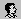

Список отделов
Пометка "Арендованый" говорит о том, что этот отдел находится в аренде
Создание отделов
Для создания отдела необходимо щёлкнуть мышью по кнопке "Добавить отдел". После чего, справа от списка отдела станет активным поле ввода названия отдела. Чтобы выбрать отдел в который входит новый отдел, нужно один раз кликнуть на отдел в списке отделов и нажать кнопку выбрать в строке "Входит в" или ввести название отдела вручную. Также возможно вначале выбрать в списке отдел в который нужно добавить новый и после этого нажать кнопку "Добавить отдел" - тогда поле "Входит в" заполнится сразу автоматически. Если необходимо - выставляем галочку "арендованный" и нажимаем сохранить.
Редактирование отделов
Для редактирования отдела необходимо сделать двойной щелчок по названию отдела в списке, после чего станет активным для редактирования поле с названием отдела. Вносим изменения и нажимаем сохранить.
Перенос отделов
Для переноса отдела необходимо один раз кликнуть по названию отдела в списке, после чего нажать кнопку "перенести отдел" и отредактировать поле "Входит в" (выбрать из списка или ввести вручную название). Вносим изменения и нажимаем перенести.
Удаление отделов
Для удаления отдела необходимо выбрать его в списке и щёлкнуть мышью по кнопке "удалить отдел".
Список сотрудников
- 1- Кнопка редактирования сотрудника
- 2- Кнопка удаления сотрудника
При необходимости сортировки по тому или иному реквизиту,
необходимо щёлкнуть по заголовку реквезита в шапке таблицы.
Данные сортируются в двух направлениях, по возрастанию и убыванию для
числовых, и по алфавиту и в обратном порядке для строковых данных.
Например, чтобы отсортировать список по фамилии, необходимо щёлкнуть
по реквизиту "Фамилия", после чего список отсортируется по алфавиту,
при повторном щелчке данные осортируются в обратном порядке.
Сортировать можно по следующим реквезитам:
- Таб.Номер
- Фамилия
- Имя
- Отчество
- Отдел
- Должность
Если строка списка сотрудников выделена красным, значит этот сотрудник не сможет пройти на территорию предприятия (данные его пропуска не будут занесены в файл pass.txt).Это может быть по следующим причинам:
- Сотруднику не присвоен код пропуска.
- Сотруднику не назначен график.
- Дата приёма сотрудника на работу и дата начала действия пропуска меньше текущий даты.
- Дата увольнения и дата окончания действия пропуска больше текущей даты.
Сверху над списком, представлены возможности для операции "Фильтр", "Создания сотрудника","Информация","Печать."
Поиск сотрудников
Для поиска сотрудника нажмите на "Фильтр" После чего появиться окно:
Введите необходимые реквизиты для поиска и нажмите кнопку "Найти".
Вы можете осуществлять поиск по одному или нескольким реквезитам.
Создание сотрудника
Для добавления нового сотрудника нажмите на "Добавить сотрудника".
После чего произойдёт переход на форму создания сотрудника:
Форма создания сотрудиков (Основные реквизиты).
Поле "Табельный номер" - введите табельный номер (только цифры).
Поле "Фамилия" - введите фамилию сотрудника.
Поле "Имя" - введите имя сотрудника.
Поле "Отчество" - введите отчество сотрудника.
Поле "Должность" - введите должность сотрудника.
Поле "Отдел" - выберите из выпадающего зписка один из отделов предприятия.
Поле "Дата приема на работу" - укажите дату приема на работу. Нажмите на кнопку
. После нажатие появится окошко с календарём из которого
нужно выбрать дату.
Поле "Дата увольнения" - оставляется пустым, если дата неизвестна. Заполняется так же каи поле "Дата приема на работу"
Кнопка "Очистить" позволяет сбросить значения полей "Дата увольнения" и "Дата приема на работу"
Поле "График работы" - выберите из выпадающего списка график работы для сотрудника.
Поле "Тип расчёта наработки" - выберите из выпадающего списка тип расчёта нароботки для сотрудника.
Поле "Рабочая зона" - выберите из выпадающего списка рабочую зону для сотрудника.Если стоит
флаг "Брать из графика" то рабочая зона будет назначена из выбранного графика.
Поле "Допуск" - выберите из выпадающего списка допуск для сотрудника.Если стоит
флаг "Брать из графика" то допуск будет назначен из выбранного графика.
Флаги "Завтрак","Обед","Ужин" - установите необходимые флаги если на предприятие
осуществляется питание сотрудников и необходимо получать отчёт по питанию.
Продолжим заполнение реквизитов сотрудника. Ниже педставлено продолжение формы создания сотрудника.
Здесь нужно будет заполнить реквизиты пропуска сотрудника, либо выбрать его из списка свободных пропусков.
Для того, чтобы выбрать пропуск сотрудника необходимо нажать кнопку "Выбрать"
После этого отобразится окно со списком свободных пропусков.
По поводу создания пропусков см. раздел "Пропуска"
Для выбора пропуска нужно нажать кнопку
После чего в поле "Код пропуска" отобразится код выбранного пропуска.
Если свободных пропусков не оказалось, то пропуск можно создать в форме создание сотрудника.
Для этого щелкните по кнопке
которая находится рядом с кнопкой "Выбрать".После чего
отобразится форма с реквизитами пропуска:
Поле "Дата введения в эксплуатаци" - укажите дату.
Поле "Дата вывода из эксплуатаци" - укажите дату или оставте пустым.
Поле "Pin код" - оставьте пустым если код неизвестен.
Флаги "Статус пропуска"
Флаг "Блокированный" - установите если хотите заблокировать пропуск.
Флаг "Администратор" - установите если хотите наделить пропуск правами администратора.
Флаг "Контроль двойных засечек" - установите если необходимо включить для пропуска контроль двойных засечек.
Более подробную по пропускам смотрите в разделе "Пропуска".
Теперь заполнение формы создания сотрудников - закончено, осталось только нажать на кнопку "Сохранить" для добавления нового сотрудника. Если все реквезиты были заполнены правильно то сохранение пройдёт успешно в противном случае Вы получите сообщение об ошибке.
После успешного заведенния сотрудника при необходимости (например, для отображения в программе Фотоконтроль) можно загрузить фотографию.
Редактирование сотрудника происходит по той же схеме, что и создание сотрудника. Для редактирования сотрудника нажмите на кнопку "2" в списке сотрудников. После чего появится форма создания сотрудника с его реквизитами. Измените необходимые реквизиты сотрудника и нажмите кнопку "Сохранить".
Групповые оперции служaт для выполнения однотипных действий над группой сотрудников.
Ниже изображён сформированный по фильтру список сотрудников.
Для получения необходимого списка сотрудников создайте условие фильтра,
для этого измените параметры
фильтра в шапке списка. Посли установки параметров фильтра нажмите кнопку
"Фильтр" На экране (как показано выше) отобразиться список сотрудников.
Для выбора необходимых сотрудников установите флажки (находятся слева) напротив нужных сотрудников.
Либо если нужны все сотрудники - установите флаг, который находится в шапке списка.
После того как выбраны нужные сотрудники нажмите кнопку "Добавить выбранных".
Выбранные сотрудники отобразятся в списке ниже.
Если необходимо снова добавить сотрудников в список, то установите параметра фильтра заново и проделайте все предыдущие шаги.
После того как список нужных сотрудников сформирован выберите неоходимую операцию из выпадающего списка.
Список выполняемых действий:
- Перевести в отдел
- Назначить график
- Назначить зону
- Назначить рассчёт отработанного времени
- Блокировать пропуска
- Разблокировать пропуска
- Назначить администратором
- Удалить
После выбора необходимого действия нажмите кнопку "Выполнить". Полсе чего выбранное действие применится ко всем сотрудникам списка.
- Номер - шестнадцатиричный код пропуска
- Дата ввода/вывода - если пропуск находится в эксплуатации дата вывода-не указывается
- Pin код - обычно не указывается. По умолчанию равен 'zzzz'
- Статус пропуска - совокупность значений которыми обладает пропуск.
Значения отображаются в виде пиктограмм. Если пиктограмма цветная то значение активно иначе неактивно.
Значения пиктограмм:- - пропуск блокированный.
- - пропуск гостевой
-  - пропуск администратора
- - контроль двойных засечек для пропуска
- - кнопка редактирования
- - кнопка удаления пропуска
Создание пропусков
Для создания пропуска необходимо нажать на кнопку "Новый" (Она находится в конце списка).
Произойдёт переход к форме нового пропуска:

Поле "Код пропуска " - введите или вставьте из буфера обмена код пропуска.
Поле "Дата введения в эксплуатацию" - укажите дату.
Поле "Дата вывода из эксплуатации" - укажите дату или оставьте пустым.
Поле "Pin код" - оставьте пустым или со значением по умолчанию, если пин-код не используется.
Флаги "Статус пропуска"
Флаг "Блокированный" - установите, если хотите заблокировать пропуск.
Если пропуск блокирован, то его владелец не сможет пройти через турникет, дверь и т.д.
Флаг "Администратор" - установите, если хотите наделить пропуск правами администратора.
Права администратора, позволяют владельцу пропуска проходить через турникеты без ограничений, если только данный пропуск не заблокирован и он выгрузился в pass.txt.
Флаг "Контроль двойных засечек" - установите, если необходимо включить для пропуска контроль двойных засечек.
Контроль двойных засечек - это режим при котором пресекается двойной проход в одну сторону.
Флаг "Гостевой" - установите этот флаг,если пропуск используется для выдачи гостям
Флаг "Автомобильный" - установите этот флаг,если пропуск используется для автомобиля
Для добавления пропуска нажмите кнопку "Добавить".
Модуль "Карточка сотрудника" предназначен для поиска актуальной информации о сотрудниках и посетителях по заданному фильтру.
Для начала поиска необходимо указать фамилию (не менее 3-х символов) или код пропуска.
Заполнение полей "Имя", "Отчество" и выбор отдела не обязательны.
Если введённым условиям поиска будет удовлетворять более одного сотрудника, то будет отображён список сотрудников и посетителей удовлетворяющих запросу.
Сверху будут находиться сотрудники предприятия с указанием ФИО, должности и отдела.
Снизу - посетители с указанием ФИО, должности, паспорта и комментария. Посетитель будет выделен красным, если закончилось время действия выданного пропуска или пропуск выдавался ранее.
Для выбора интересующего сотрудкина нужно нажать на строку с его инициалами. Будут показаны реквизиты сотрудника, фотография и список доступных точек прохода.